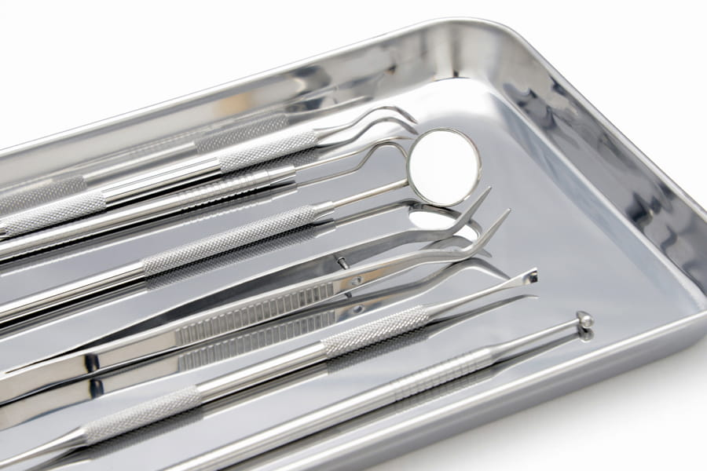
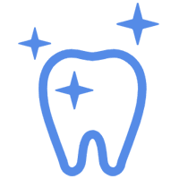
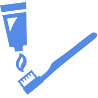
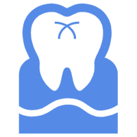

歯の定期検診は、虫歯や歯周病などのトラブルを未然に防ぐことです。
歯や歯ぐきの良い状態を維持することができ、あなたの口腔の健康維持のためにはもちろん、いつまでも自分の歯で食事を楽しむためにとても重要なことです。
歯の健康は、全身の健康の源とも言えます。定期検診はできれば３ヶ月に１回、少なくとも半年に１回行うことをお勧めします。
目安としては
お口の中は個人個人でまったく違います。むし歯リスクの高い方。歯周病リスクの高い方。リスクが両方高い方。逆にとても低い方など千差万別です。自分の状態に合わせた定期検診の間隔を話し合って決めるのがいいと思います。

虫歯菌・歯周病菌を取り除き、汚れを付きにくくします
歯周病の進行の検査をします

歯の清掃チェックをします

フッ素などの虫歯予防処置をします

噛み合わせのチェックをします